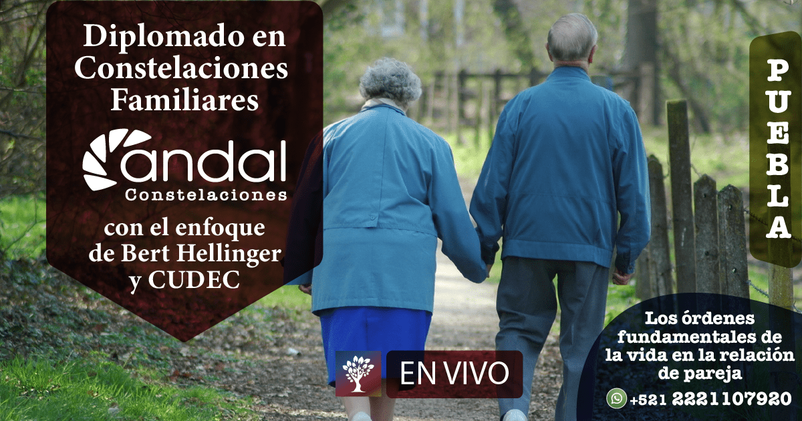

El tema de pareja es el tema toral de la vida, nos preparan para ella desde que estamos pequeños. La intervención sistémica se complica ya que se trata de dos sistemas familiares confluyendo a través de los conyugues, además del propio sistema del que está acompañando en la sanación. Haremos un recorrido de sanción personal profunda.
Te invitamos a integrarte a los dos módulos de actualización y profundización del Tema de Pareja: El módulo 1 es: Los órdenes fundamentales de la relación de pareja con el enfoque de Bert Hellinger y la Universidad CUDEC
Módulo I de actualización y profundización acerca del Tema de Parejas, heterosexuales y homosexuales, desde las Constelaciones Familiares y la Psicología de los Sistemas , dirigido a los profesionales que desean especializarse en el tema de pareja, Facilitadores en Constelaciones, Psicólogos, Terapeutas, Consejeros Matrimoniales y al público en general deseoso de tener herramientas para la vida cotidiana en pareja.
Durante el módulo miraremos casos, dinámicas ocultas y estrategias de intervención desde las constelaciones familiares, herramientas prácticas para tu vida y tus clientes.
Impartido por especialistas en tema de pareja: Anatolio y Diana Pareja de 37 años casados y 11 años atendiendo parejas.
Psicólogos y Consteladores Familiares, especialistas en tema de pareja, han establecido un sistema de intervención donde trabajan como pareja atendiendo a otras parejas.
Este módulo forma parte de nuestro Diplomado en Constelaciones Familiares con el enfoque de Bert Hellinger y la Universidad CUDEC
Para los que quieran incorporarse y no forman parte del Diplomado, solo se abriran 15 lugares.
